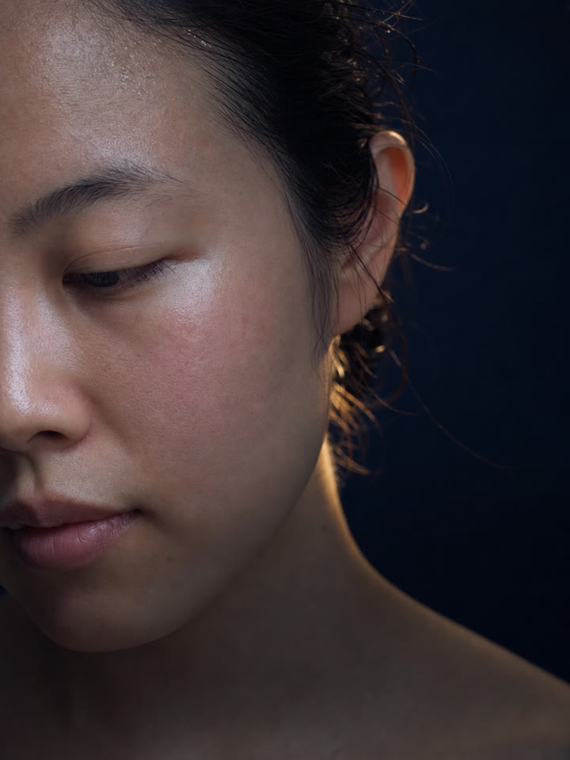
1Your skin stings or flushes after cleansing, and you have started calling that normal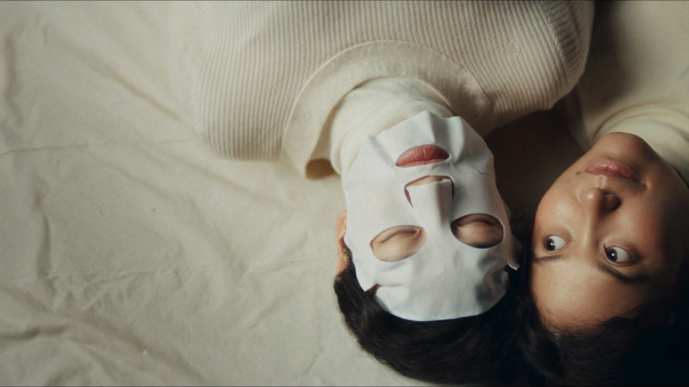
Am I lacking hydration?
Should I be doing that too?
Is my skin really that dry?
Barrier first, everything else after.
Your skin isn't sensitive.
It's your barrier that's thin.
If your skin keeps reacting to products, adding stronger ones isn't always the answer. A weakened barrier can make even good ingredients feel irritating.
A Skin Read shows you what your skin actually needs, so you can stop guessing and start treating it properly.
Free · 45 mins · One-on-one at our studio
2,000+
ladies achieved radiant, dewy skin with BeFound
10+ years
of helping ladies build a strong skin barrier
0
products prescribed in the studio
45 mins
and you leave with clarity on your skin
Four things women say right before they finally get their barrier read.
If two of these are true, the problem is not which product you are using. It is what all of them have been doing to the same layer of skin.
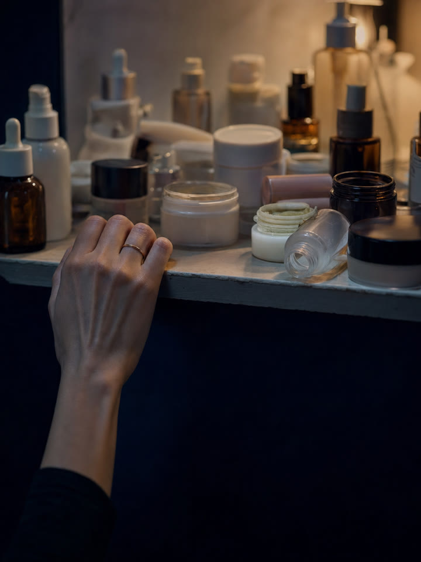
2You have a drawer of products that worked for three weeks and then stopped3Everything either does nothing or breaks you out, with no middle ground 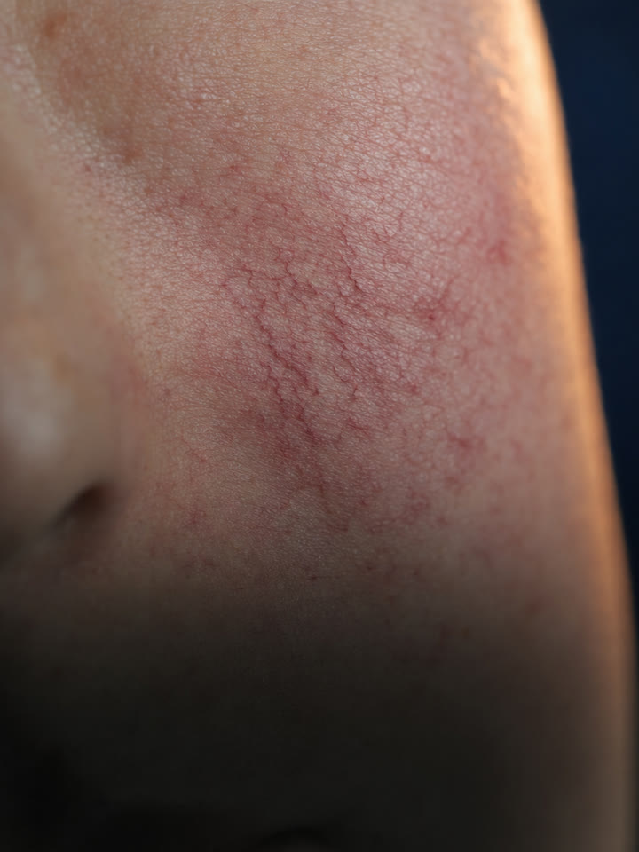
4You were fine at 22. Now your skin reacts to things it never used to.
It is not your fault.
You were consistent with your skin upkeep. You read the labels. You gave things time. You did everything you were told to do. Yet you don't see any improvements.
The skincare market oversimplified women's skin into four broad buckets. Dry, oily, combination, sensitive.
But the truth is, no two skin barriers are the same. An ingredient that transformed your friend, or an influencer with similar skin, can quietly thin yours. Same ingredient, different barrier, opposite result.
Each and every one of us has a skin barrier that is unique to us. Just like our fingerprint.
Barrier first,
everything else after.
1Saw it recommended
2Tried what worked for her
3Skin reacted
4Barrier thinner
The hidden cost of not knowing your own skin barrier.
A drawer of half-used bottles is the cost you can see. But it is also the smallest one. What is more costly is navigating blindfolded, without truly understanding the right ingredients to build a healthy skin barrier.
- Treating what you can see, while the cause underneath keeps getting worse
- Using ingredients that quietly thin the barrier you are trying to protect
- Paying for improvements that fade before the bottle is empty
- Carrying the mental load of researching and testing every single product
Every one of them is about what you put on your skin.
Not one of them is about the layer underneath.
What a barrier that holds actually gives you.
Real clients, unretouched, shot on their own phones. Drag any of them.
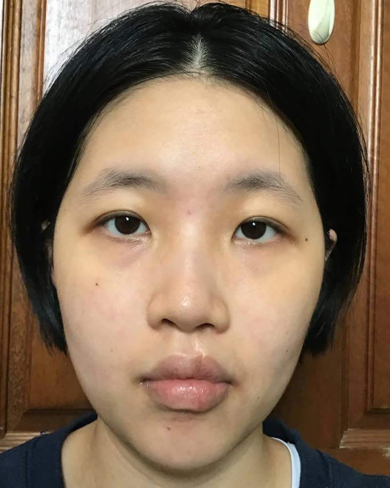
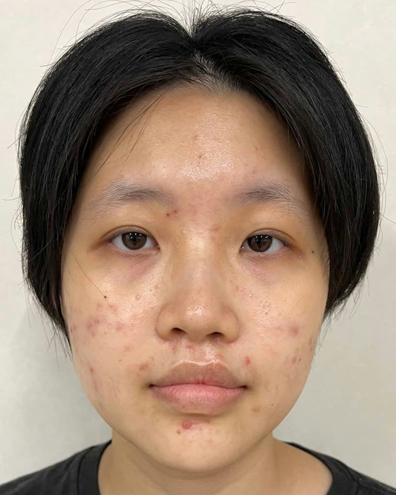
Before After“I finally understand what my skin actually needs. The results speak for themselves.”Larissa
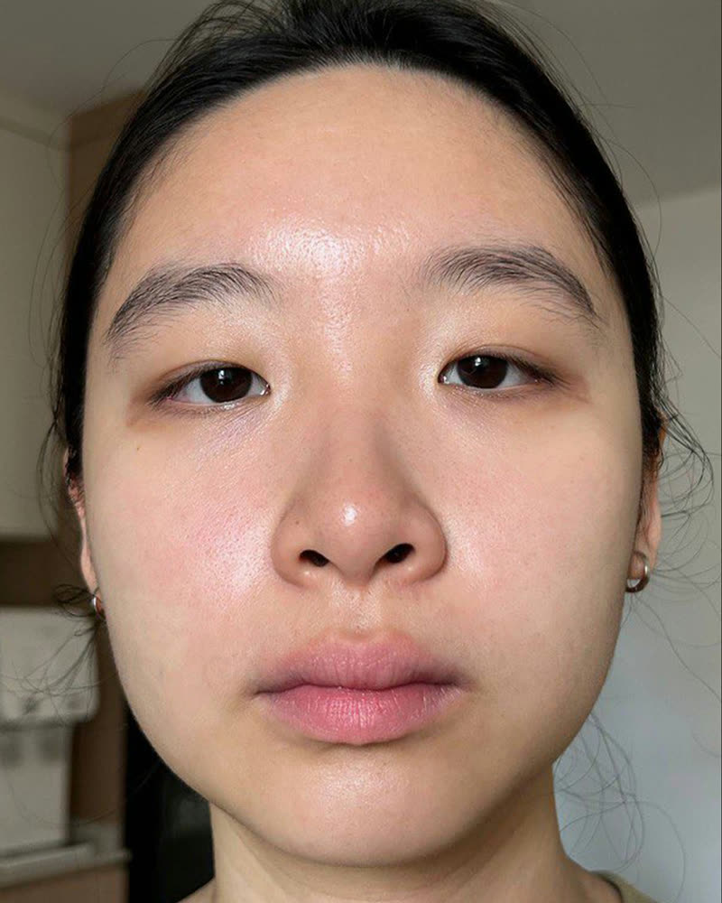
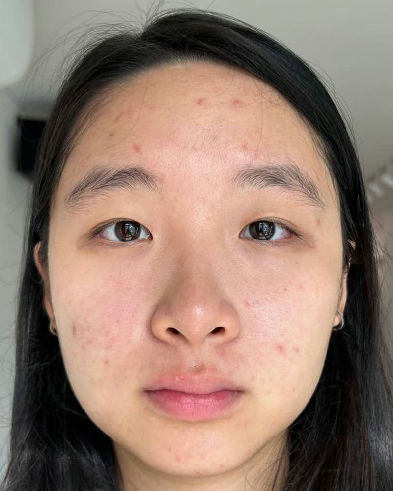
Before After“I didn’t realise my routine was making my skin worse. Once we rebuilt it properly, everything made sense.”Chermaine
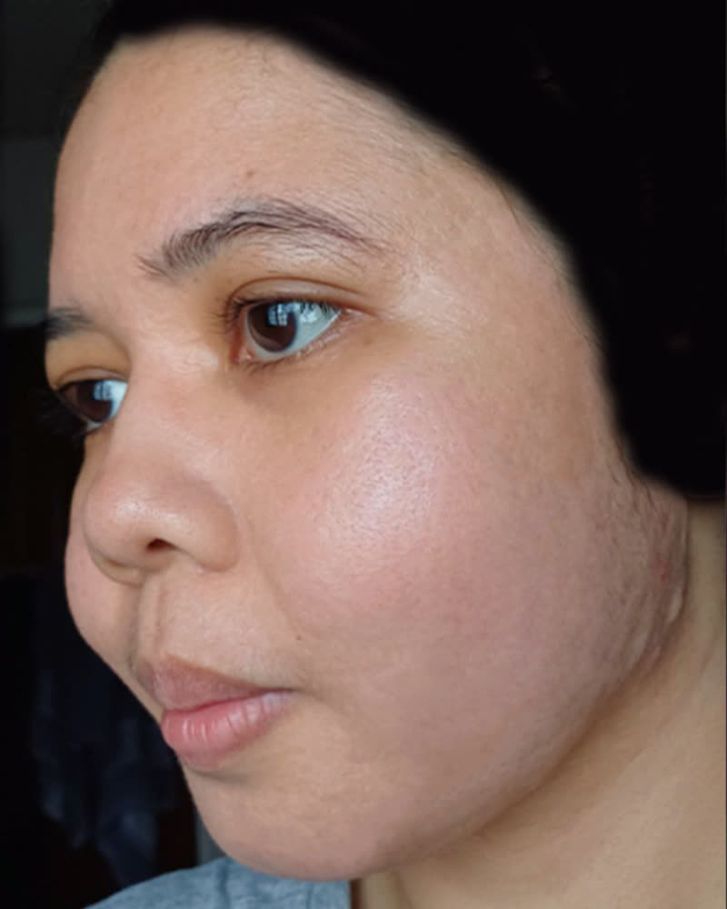
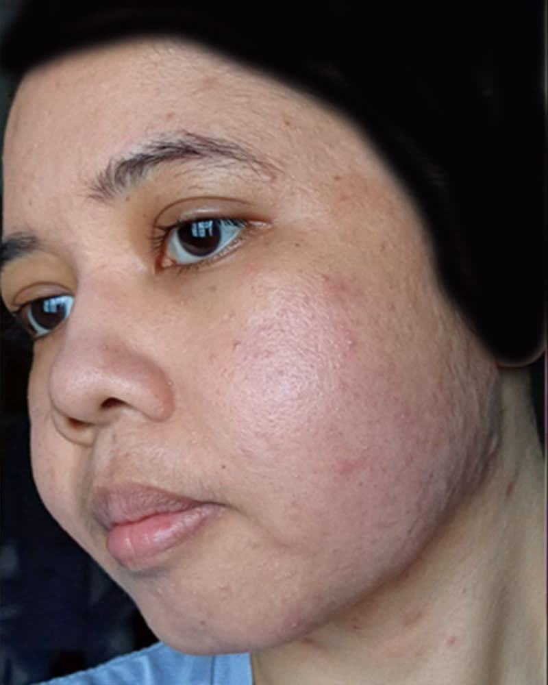
Before After“My skin finally feels calm for the first time in years.”Aqilah
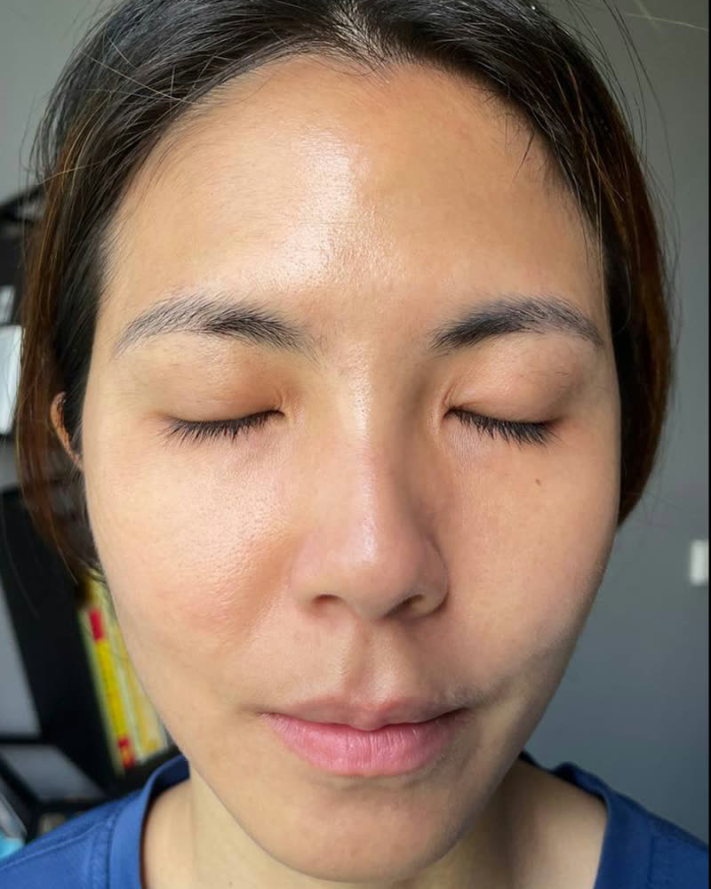
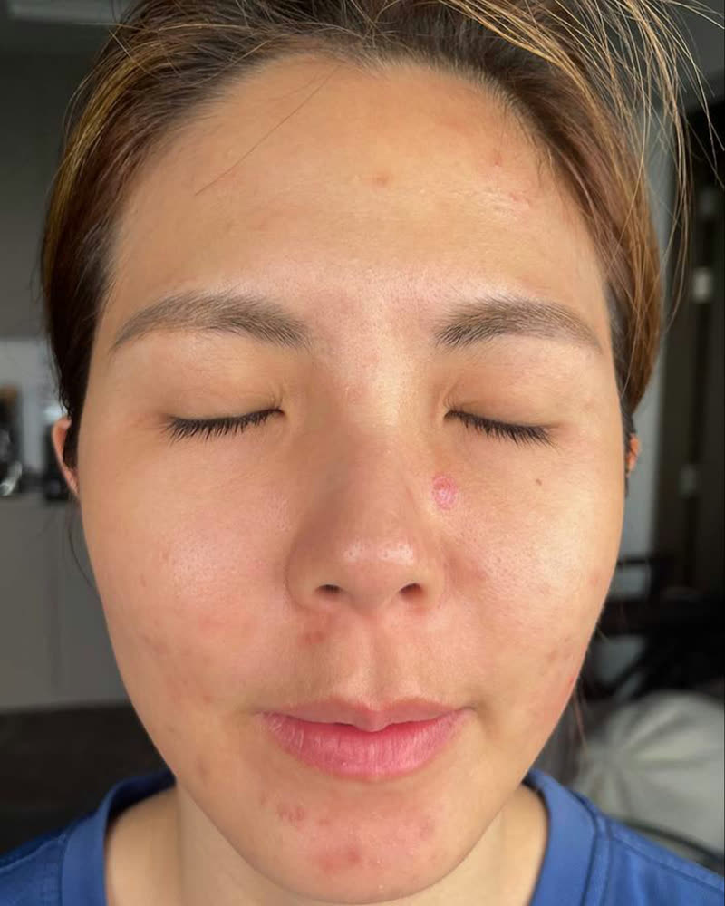
Before After“Years of layering products and making it worse. All it needed was the right guidance.”Bryna
Introducing the Skin Read
What a Skin Read actually is.
Forty-five minutes, one-on-one, with a skin barrier specialist. It is not a facial. Nothing is applied to your skin and nothing is extracted.
The BeFound Skin Scan reads hydration, texture and tone, and which zones are holding while others quietly fail. By the time your eyes catch any of it, your barrier has been struggling for weeks.
Your barrier comes back as a score and a band. “My skin is acting up” turns into something you can see, point at and fix.
BeFound Skin Scan
Illustrative
- UV water
- UV spot
- Pigment
- Sensitivity
- Pimple
- Porphyrin
- Collagenous fibre
Eight captures, one face. Yours is read in the studio, not estimated here.
Free · 45 minutes · Nothing applied to your skin
Book your Skin Read
Ready to finally understand your skin and start seeing visible improvements?
Pick a time that suits you. Free, 45 minutes, one-on-one at the studio. You leave with clarity on your skin and what’s next for you.
137 Amoy St, #02-01 Far East Square, Singapore 049965. Nearest MRT is Telok Ayer. Nothing is applied to your skin, so you can come on a work day and go straight back.
Watch one with Daphne
This is what a Skin Read looks like.
Daphne filmed hers, from right before her first visit to everything she learned about her skin. Subtitles are on, sound is optional.
She walked in guessing. She walked out with a map.
Minute by minute
Here is exactly how the 45 minutes go.
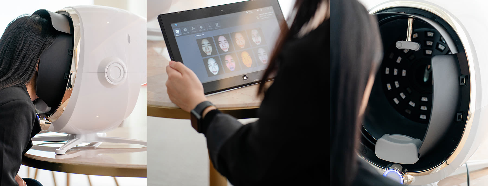
-
Minutes 0 to 10 · The scan
Your barrier, read at machine level
The BeFound Skin Scan reads your skin at a level your eyes and a mirror cannot. Hydration, texture, tone, where your barrier is strong and where it is struggling.
-
Minutes 10 to 30 · Your Findings
Walked through together
We go through what the scan found, alongside your skin history. What you have tried, what helped, and what has been quietly working against you.
-
Minutes 30 to 45 · What is possible
Your path, mapped
We map out where your skin could go from here and the path to get it there. Clear, honest, specific to your skin.
You leave knowing more about your skin than you ever have.
Client stories
From the women who have sat in the chair.
Unscripted conversations about where their skin started and where it is now. Press play, sound on.
Book my Skin Read →
Free · 45 minutes · One-on-one at the studio
What our clients say
Straight from the people who have been there.
4.9
1,500+ reviews
Google Reviews
Singapore’s most-reviewed skin journey studio
-
Yvonne Tan
Local Guide · 8 reviews
3 years ago
The results are lasting. It’s been 3 years and I have been diligently keeping to the routine customised for me through my 1-year journey with BeFound. I spend so much less on my skin now, no guesswork with products and I don’t see a need for facials. I still don’t get pimples much, if at all.
-
May Ng
6 reviews
2 years ago
I’ve been with BeFound Studios for almost two years and the journey has been truly transformative. I first went because of my very dry and sensitive skin. Almost every product I tried would eventually cause irritation. The team was patient, systematic, and incredibly knowledgeable. Today, my routine is simple, effective, and finally works for my skin. A special thank-you to Pris and Mag, your care and patience made all the difference.
-
Callie Chia
Local Guide · 11 reviews
4 months ago
Every week they followed up and checked in on how my skin was doing, making changes as needed. I felt really supported in my journey. My skin is looking much better, brighter, with minimal breakouts. I’m leaving with newfound knowledge about my skin. Thank you BeFound team!
-
Amanda Tan
5 reviews
1 year ago
I started my BeFound journey in 2024, oily and dull skin with scars and pigmentation. My complexion has become oil-controlled, brighter and less pimple-prone. I love my skin now! This is my 2nd year with BeFound.
-
Razz Li
Local Guide · 22 reviews
1 year ago
It has truly been a meaningful and fulfilling experience. The team’s sincerity and kind understanding gave me the faith to take part in the Skindewcation journey. They went the extra mile, ensuring my routine was correct, sharing practical tips, and guiding me with so much care. I’ve gained not only knowledge but renewed self-confidence.
-
Janice Huang
4 reviews
2 years ago
My face has become much clearer and in a very healthy-looking condition. I had been purchasing products that didn’t suit my skin without knowing it. Cosy, homely environment, always a comfortable follow-up session with a cup of tea while understanding my skin. Cheers to the whole professional BeFound team.
-
Jermaine Tan
Local Guide · 14 reviews
8 months ago
What I’ve learned from the skin journey program:
- Healthy skin barrier is everything, be gentle, let skin heal naturally
- Smart product use: check ingredients, patch test first
- Simple, tailored routines work, no need to layer everything
What worked for me: balancing my skin’s oil levels, no more blotters or facials.
-
Debra J.
3 reviews
6 months ago
Did a one-year program with BeFound. Oily and very sensitive skin, it took systematic trial and error to find what worked. A month on from the program, my skin continues to steadily improve: getting thicker, hardly any pimples, and no longer reliant on dermatologist creams.
-
Sophia Chua
7 reviews
5 months ago
My skin is more troubled than the average person’s. Mid-journey I found out I couldn’t use common ingredients like centella and hyaluronic acid. What I appreciate most is their upfront yet empathetic communication, and their help removing the mental load from researching, testing and monitoring every single product.
Book my Skin Read →
Free · 45 minutes · One-on-one at the studio
What changes when the barrier is the thing you fix.
-
Bare skin you’re fine to leave bare
Not a filter and not good lighting. Skin that looks like that at 7am.
-
Marks clear on schedule
A barrier with something left in it repairs faster. Breakouts stop lingering the way they used to.
-
You stop buying what your skin can’t take
The drawer stops filling up. You know what your barrier can hold before you pay for it.
-
Foundation becomes a choice
Chermaine came to us covering cystic acne. She is foundation-free now.
-
You can read a label and know
Not guess. Know which actives your barrier can currently hold, and which one is three months away.
-
Someone who knows your barrier, all year
Aircon, haze, hormones, a bad month at work. You get guidance through those months instead of starting the guessing over.
Priscilla · Founder
BeFound is the only skin barrier specialist in Singapore that helps women eliminate the guesswork.
Most routes never get you to clarity. You guess your skin type, you guess the product, then you guess whether six weeks of it did anything. We measure instead, and build on the measurement.
It works because of one belief, and it is an unpopular one in this industry. Nothing you put on your face matters until the barrier underneath it can hold.
And we would rather tell you your barrier needs a simpler routine and six months to see visible improvements than sell you something it cannot hold.
10+
Years reading skin
Singapore & Japan
Singapore & Japan
2,000+
Barriers read
at BeFound
at BeFound
1-on-1
Every single
session
session
The no-pressure promise
Whatever we find, you’ll hear it straight.
Nothing is prescribed in the room. No product list, no pressure at the counter. Your Findings go home with you, and the decision happens there.
If a program fits your skin, we’ll say so once, plainly. What it is, what it does, how long it takes. Then it’s your call.
If it doesn’t fit, we’ll tell you that too. Some barriers just need a simpler routine and time. If that’s you, your Findings will say exactly that.
Get my Skin Read session →
Free45 minutesOne-on-oneFindings either way
Questions, answered straight.
Is this a facial?
No. Nothing is applied to your skin and nothing is extracted. It is a measurement and a conversation. Your barrier scanned, then explained, then mapped to a path.
Do I need to pay for this?
No. The Skin Read is free, it takes 45 minutes, and there is no obligation attached to it. You keep your Findings either way.
My skin is sensitive and reactive. Is it safe for me?
Reactive skin is the skin we read most. Nothing touches your face during the Read except the scan, and the whole point of it is finding out why your skin reacts the way it does.
Will you review my products?
Not in the Read itself. Photograph them, or bring a list, and we factor them into your Findings. The full product-by-product audit happens in your first consultation if you decide to join us.
Will there be hard-selling?
No. Nothing is prescribed in the room. If a program fits your barrier we tell you once, plainly, and you decide in your own time. If it does not fit, our consultant will say that instead. We would rather you left with accurate Findings than a package your skin cannot hold.
Should I take the barrier quiz first?
You do not have to. The scan reads everything we need on the day. If you want a rough idea of where your barrier stands before you come in, the quiz takes 90 seconds and gives us useful context to start from.
I have already tried everything. How is this different?
Everything you have tried was chosen by guessing. By eye, by review, by whoever was behind the counter. This replaces the guess with a measurement. Once you know where your barrier actually stands, what to do next stops being a gamble.
How fast does a barrier rebuild?
It depends where yours starts, which is exactly what the scan is for. A barrier that has been stripped for years takes longer than one that has been stripped for months. Your Findings will give you a realistic timeline.